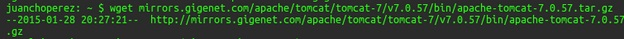
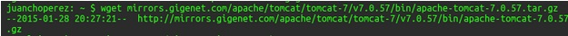
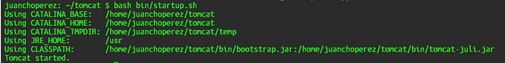

Tomcat es un contenedor Web con soporte de servlets y JSPs. Puede ser utilizado como servidor web por si mismo. Para instalar Tomcat utilizamos los siguientes comandos:
kpm install tomcat
luego se descarga el paquete,
wget mirrors.gigenet.com/apache/tomcat/tomcat-7/v7.0.57/bin/apache-tomcat-7.0.57.tar.gz Luego se descomprime el paquete descargado,
tar -xvzf apache-tomcat-7* Para facilidad de acceso se renombra el directorio,
mv apache-tomcat-7.0.57 tomcat
Ahora se necesita crear un usuario y contraseña, para lo cual se añade esta línea debajo de en el archivo tomcat-users.xml que se encuentra en la carpeta config:
<user name="anyusername" password="anypassword" roles="admin-gui,manager-gui" >Finalmente para evitar conflictos con el puerto debemos cambiar el puerto que usará tomcat, y esto se modifica en el archivo server.xml:

y ahora ya podemos iniciar el tomcat en el servidor con el siguiente comando:
bash tomcat/bin/startup.sh 